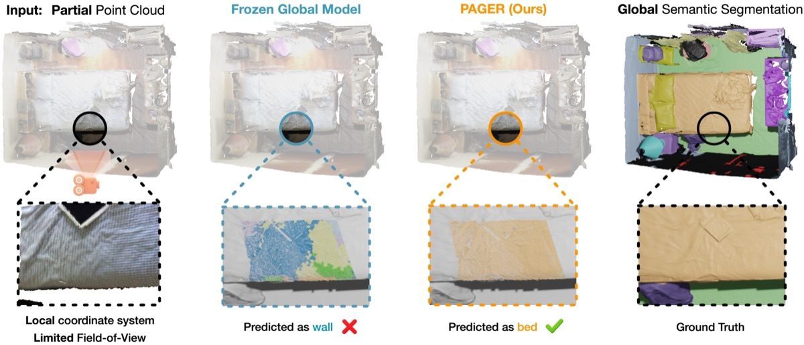

PAGER: Partial-to-global Alignment via Geometric and Relational Distillation
arXiv, 2026
A label-free adaptation method that bridges the gap between globally learned 3D features and partial, viewpoint-dependent observations, aligning features through geometric and relational distillation.